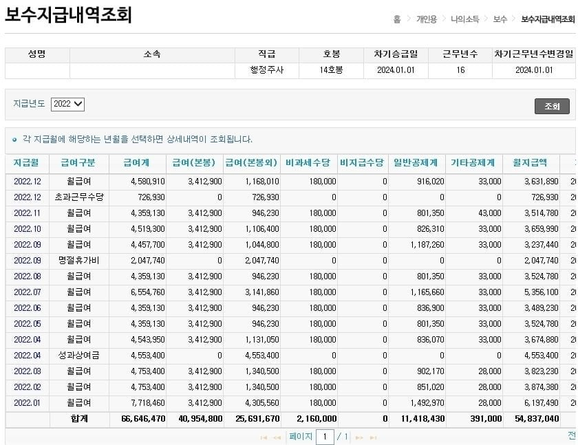

9급출 기준임
22년도 기준이고 27년도 인상분 반영해서 하면
세후 6500정도 나옴
20살에 붙었으면 30대 중후반에 세후 6500찍는거
공무원부부라고 가정하면 실수 1억2~3천정도 찍힘
이정도면 유복하진 않아도 입에 풀칠은 할듯

9급출 기준임
22년도 기준이고 27년도 인상분 반영해서 하면
세후 6500정도 나옴
20살에 붙었으면 30대 중후반에 세후 6500찍는거
공무원부부라고 가정하면 실수 1억2~3천정도 찍힘
이정도면 유복하진 않아도 입에 풀칠은 할듯
9급 1년만에 뗀다는거에서 웃고간다 나 국가직공무원인데 16년도에 들어온 사람도 지급8급인데
교대면 1.5배 더버냐?? 경찰소방 16년차면 1억받음?
20살에 공무원 하는 사람이 얼마나 된다고 ㅋㅋㅋㅋㅋ
대부분 20후에서 30일텐데
다 모르겟고 내 딸아들은 20살 공무원 준비시킬듯
애초에 그냥 버티기만 하면 돈오르고 정년보장이 어딧냐
그논리면 부사관이 최고임
왜 부사관이 최고임 업무강도도 븅신이고 군부대 박히는거아님?
부사관도 장기안되면 별로아님?
사람없어서 장기 다됨
고졸 공기업 준비시켜라 10년차에 7~8천 받는다
그것도 ㄱㅊ하지 공기업이나 공무원 4드론이 짱인듯
주사면 6급이고 거기 16호봉인데 약코 이러고 있네
그게아니구 5년전꺼 까지밖에 조회가 안돼
7급이나 6급일거야 저사람
그래서 9급할거면 빨리 해야 함
20후 30초에 9급하니까 쥐꼬리라고 하는 거지
공무원은 저연차가 너무 씹창난게 문제임ㅋㅋㅋ
팀장 과장 국장들은 돈 잘 받는다 ㅋㅋㅋㅋ
뭔데 비과세수당이 22년도에 달마다 18만원 찍혀있냐? 올해 급식비가 16만원인데
평달기준 직급보조비가랑 급식비 정근수당가산금 다 해도 40은 안될텐에
본봉외급여 100대인거 뭐냐 초근 풀??
20살에 공무원 합격할수있을정도 공부성적이 나오면
대학을 보내서 다른 공부를 시키지.
근대 대학을 나와도 취업이 힘드니(특히 문과)
대학졸업하고 다시 공부해서 공무원하는게 평균적이지.
그래서 평균입직은 20후반.
20살에 시작하면~ 가정이참 필요없는게
대부분의 직업이(심지어 중소기업도)
20중후반에 시작하지 20살되자마자 하는 직업은 어디 특성화고 출신 말고는 없음
그 특성화고애들도 직업에 불만족하여 다시공부하거나 다른일하거나 하거나해서 돌고돌아 늦게 자리잡는 경우가 오히려 보통이고.
저기보이는 6급이라는 급은 지자체마다 다르지만 천룡인들도 40살은 되어야 달고 일못한다고 소문나면 50다되서 달기도함.
20살 시작이면 상위권직업. 30에 시작하면 애매함
근데 도대체 20살 타령들 왜 하는 거임? 취업 평균 나이 20대 후반 아닌가? 시발 뭐든 20살에 시작하면 엄청나
베이스 없이 20살에 바로 구할 수 있는 안정적인 직장은 공무원정도니까.
서울기준 9출 학력 어떤지 알고 하는 말임?
지방으로 보면 되지. 꼭 서울 9출만 봐야함? 거꾸로 지방직 9급 학력은 어떤데? 20살에 가장 가능성 높은 안정된 직장 취직 고속도로인건 맞지 뭔. 이 조건 저 조건 선별적으로 골라서 붙이고 있네
사실 서울도 지방직이지만 우리가 흔히 말하는 지방을 의미하는 거라면 지방은 연고가 필요함. 그리고 지방이라고 다를 게 아니라 지거국이 흔하고 대부분 대졸임 또는 중퇴하거나. 순수한 의미의 고졸 2~3% 될까?
애초에 위에 누가 말했던 것처럼 20살에 공무원 시험 합격할 정도면 대학부터 갈(보낼) 생각을 할거임. 그게 선택지가 넓으니까. 결국 20살에 공무원하라는 건 중학생한테 공고로 가라는 말인데 이게 어떻게 가장 가능성 높고 안정된 취직 고속도로임?
ㄹㅇ ㅋㅋㅋ
버티다 병들어서 죽을듯
근속 16년에 14호봉임. 저거를 잘 봐라.
공무원은 9~10호봉 까지가 헬임
이후부턴 대체적으로 급여 상승폭 존나 올라감
사기업이면 이미 5년차에 세후 6500 찍었음
공무원 9급 갈 사람이면 사기업은 중소~중견라인이라 5년은 힘들지
본문대상은 주사(공무원6급)에 근무연수가 16년
고속승진아니면 7급출발인거같은데 9급출인것처럼 해버리면 어카누
남자다.. 군경력 포함 호봉이 다 들어가있는데 7출이 계산상 맞니?
본인꺼임? 공무원 인사적체가 있어서 관운이 엄청 잘 떨어져야 9급에서 주사로 16년안에 달음
상급기관가서 활약해서 빨리가는방법도 있고
연수 꽊꽊채워서 가는 일반공무원은 아니지 솔직히
아. 이거 보고 찾아보니 제대로 낚였네. 타 커뮤 펌 이미지네. 왜 2022년인가 했다 아. 공무원 본인 인증글 같은게 아니고 펌짤로 이정도 번다 이소리였네
우리기관(국가직)은 7급도 근속으로 다는데.. 일반적이진 않지?..
국가직은 좀 느릴텐던 지방직은 입직 3년 7급달고 16년이면 동기 몆몇은 6급달았음
1억2천이면 풀칠은 아니고 아파트 대출금 갚으면서 그냥 보통으로 살겠지
할거면 ㄹㅇ 20대 초반루트타는게 최곤거같음
풀칠 ㅋㅋ
30살에 입사하면 46살인데 엄청 많은건 아니고 적당한거 같음
20살에도 갈 수 있는곳이란게 메리트지
그래서 세후 6500이면 세전 얼마임?
둘이 합쳐 연 1억2천인데 입에풀칠? 금칠도 할듯
반도체 투자한 하닉러 삼전라들은 신났어요